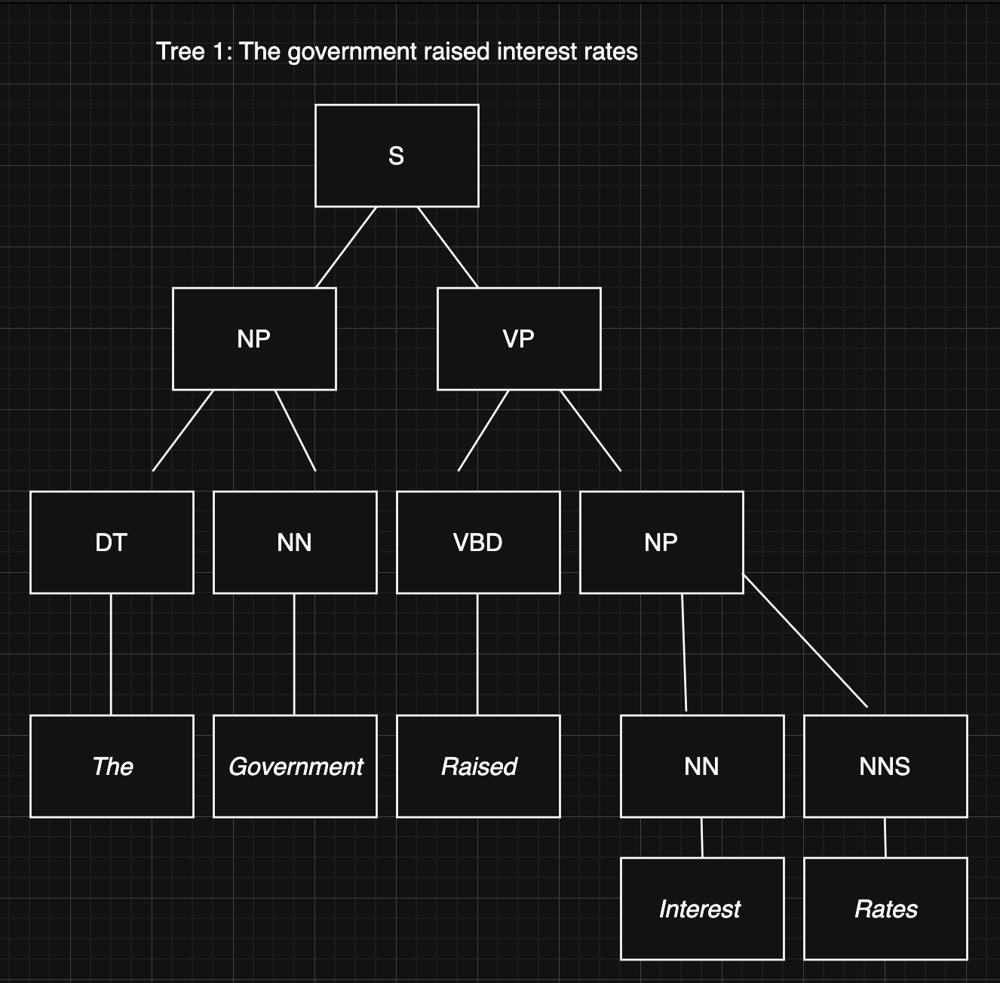
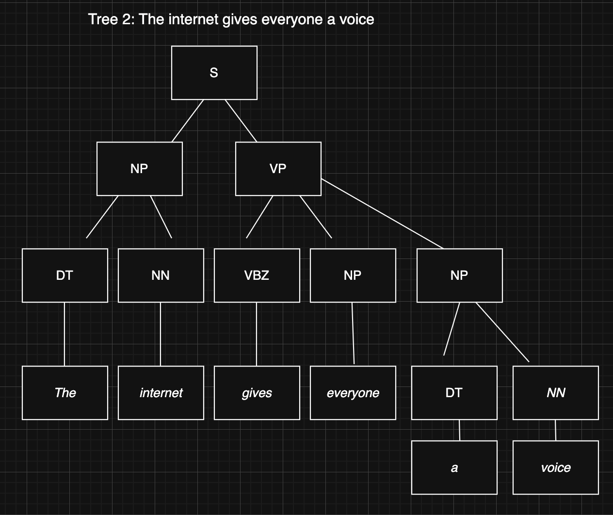
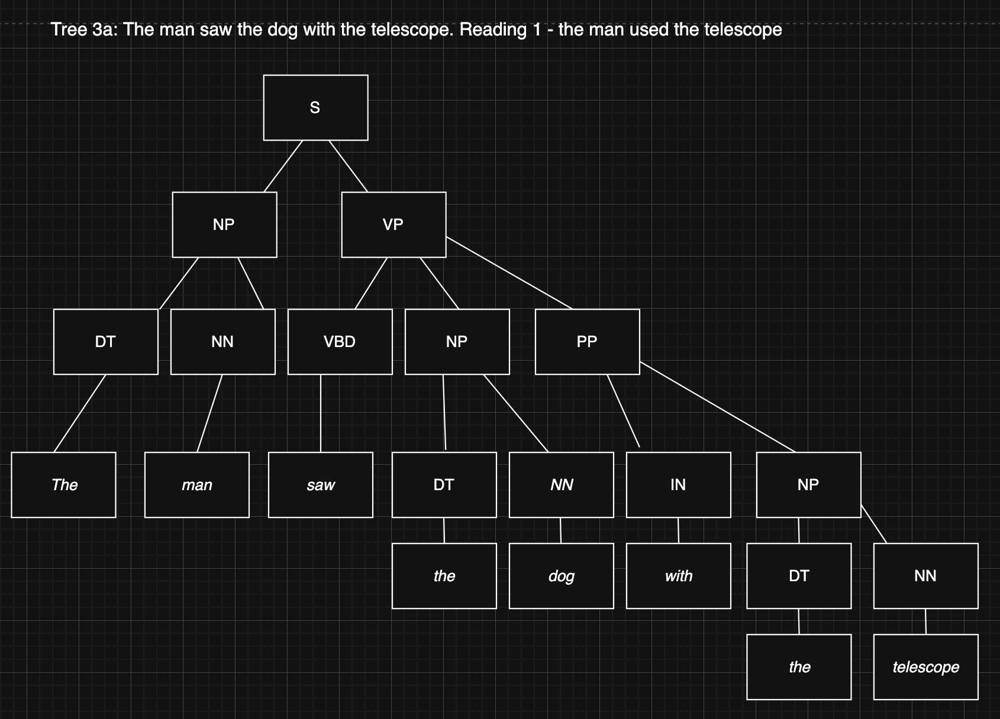
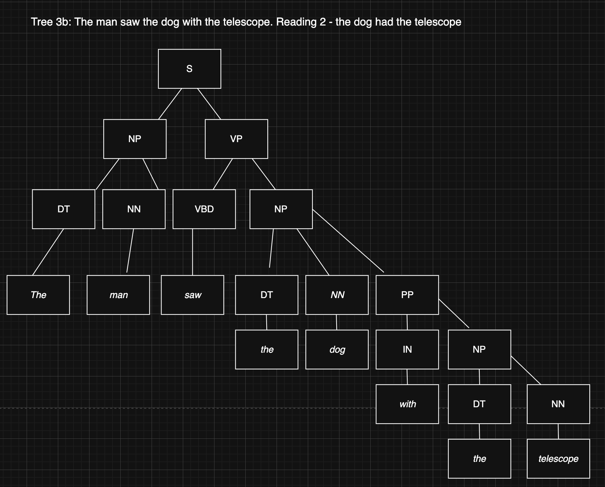

Unit 4: Parse Tree Activity
This activity required the creation of constituency-based parse trees for three given phrases. Parse trees are a core tool in natural language processing (NLP) and computational linguistics, used to represent the grammatical structure of a sentence by breaking it into its constituent phrases.
What is a Constituency-Based Parse Tree?
A constituency parse tree represents a sentence as a hierarchical structure of nested constituents (phrases). Each node in the tree represents a grammatical unit - for example, a noun phrase (NP), verb phrase (VP), or prepositional phrase (PP) - broken down to individual parts of speech (POS) at the leaf level. Constituency parsing is foundational to natural language processing, with applications ranging from grammar checking and information extraction to question answering systems, where understanding the grammatical role of each phrase is essential to interpreting meaning accurately (Jurafsky and Martin, 2023).
Phrase 1: "The government raised interest rates."

Analysis:
- S → NP + VP
- NP (subject): "The government" → DT ("The") + NN ("government")
- VP: "raised interest rates" → VBD ("raised") + NP
- NP (object): "interest rates" → NN ("interest") + NNS ("rates")
Phrase 2: "The internet gives everyone a voice."

Analysis:
- S → NP + VP
- NP (subject): "The internet" → DT ("The") + NN ("internet")
- VP: "gives everyone a voice" → VBZ ("gives") + NP + NP
- NP (indirect object): "everyone" → NN ("everyone")
- NP (direct object): "a voice" → DT ("a") + NN ("voice")
Phrase 3: "The man saw the dog with the telescope."
Analysis - Structural Ambiguity:
This phrase is systematically ambiguous and has two valid parse trees depending on the attachment of the prepositional phrase "with the telescope":
Reading 1 - PP attaches to VP (the man used the telescope)

- VP has three children: VBD ("saw") + NP ("the dog") + PP ("with the telescope")
- The PP modifies the verb phrase - it was the man who had the telescope
Reading 2 - PP attaches to NP (the dog had the telescope)

- VP has two children: VBD ("saw") + NP
- The NP contains DT ("the") + NN ("dog") + PP ("with the telescope")
- The PP modifies the noun phrase - it was the dog that had the telescope
This ambiguity is a well-known challenge in NLP, illustrating why accurate parsing requires contextual understanding beyond pure syntax.
References
- Jurafsky, D. and Martin, J.H. (2023) 'Constituency Grammars', in Speech and Language Processing. 3rd edn. Available at: https://web.stanford.edu/~jurafsky/slp3/ (Accessed: 2 April 2026).